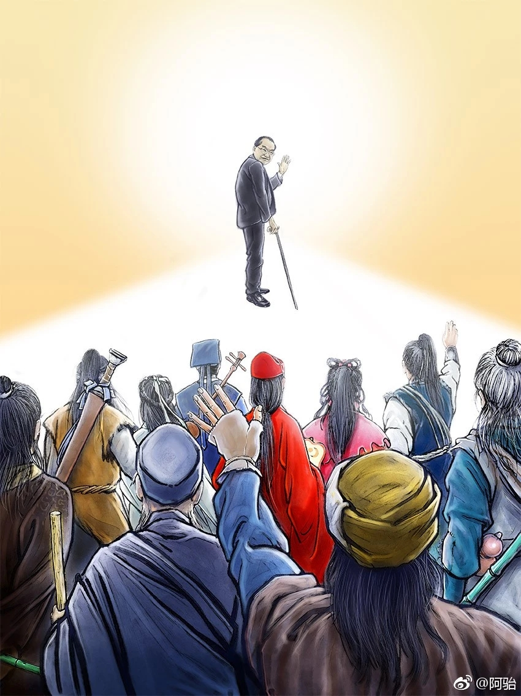
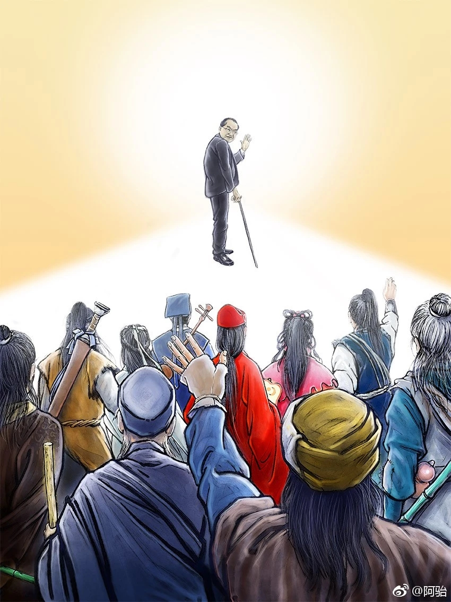
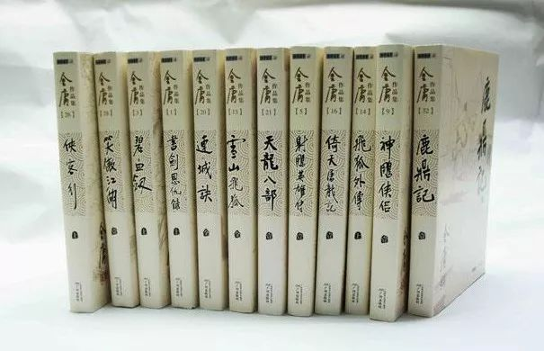
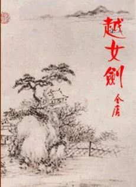
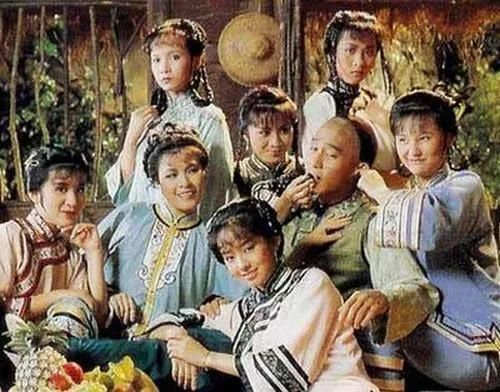
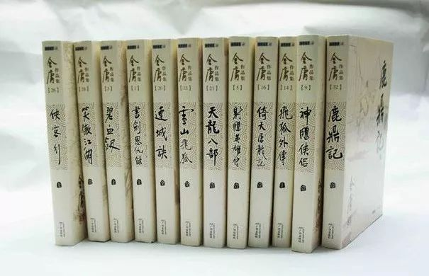
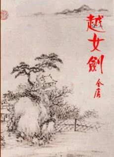
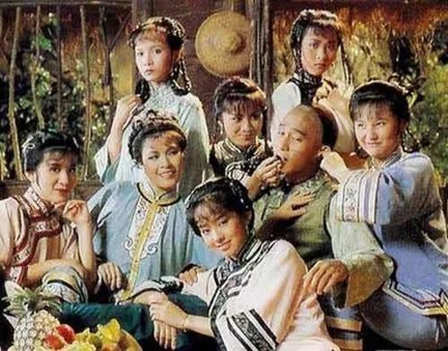

@李小柒
你瞧这些白云
聚了又散
散了又聚
人生离合
亦复如斯
笔落了，江湖犹在。
文章转载于微信公众号：好机友 文章发布时间：2818-10-30
文章转载于微信公众号：好机友 文章发布时间：2818-10-30
 其实，我要告诉大家，这个说法是不准确的。
金庸一共写了 15 部小说，而这句对联只提到了 14 部，它们分别是：
《飞狐外传》《雪山飞狐》《连城诀》《天龙八部》《射雕英雄传》《白马啸西风》《鹿鼎记》；
《笑傲江湖》《书剑恩仇录》《神雕侠侣》《侠客行》《倚天屠龙记》《碧血剑》《鸳鸯刀》。
朋友们是不是觉得，每一部书名都如雷贯耳？

说回那句对联，它是金庸自己提出来的，而且老先生也曾经回应，是先有小说再有对联，并非先有对联再有小说。
在我看来，可能也冥冥中的缘分，促成了这一句工工整整的对联吧。
可能会有朋友提出疑问，剩下的一部小说是什么呢？那就是在 1970 年首次刊载的《越女剑》。
但是，我要说但是。
《越女剑》其实只是一部短篇小说，在它发表的时候，长篇小说《鹿鼎记》还在连载，并且《鹿鼎记》在 1972 年才连载完毕。
由于种种的原因，《越女剑》的名字没有写入那句对联里，金庸先生也觉得遗憾。

但《越女剑》的知名度，或者说文学造诣，并没有因为这个原因而有所减损。
甚至，金庸的围棋老师陈祖德先生，也说他最喜爱这篇《越女剑》。
当然，正如一千个观众心里，就有一千个哈姆雷特，每一个人都肯定有自己最喜欢的一部金庸作品。
比如说，我最喜欢的就是《鹿鼎记》。
何出此言呢？
在我看来，在武侠小说这个圈子里，能打败金庸的也只有金庸自己了。
而《鹿鼎记》这部小说，就是金庸先生想挑战自己。
不信的话，大家可以去看看金庸在《鹿鼎记》之前的作品，里面的主角不是机缘之下获得绝世武功，就是出身显贵、师出名门。

可偏偏《鹿鼎记》的主角韦小宝，就是一个没有厉害的武功，还要出身于社会最底层的人。
试问，谁不曾有过一个武侠梦呢？
现实让我们知道，不是每一个人都有传奇的经历，也不是每一个人都能成为主角，但这些都不能阻碍我们，去书写自己的“侠”字精神。
所以金庸哪怕是通过韦小宝这样一个角色，也能表达出他对“侠”的诠释，可见金庸真的是才华横溢。
也是通过《鹿鼎记》，我才真正懂得了“武侠”不在于“武”，而在于“侠”。
今天下午，带给我武侠梦的人，离开了这个世界。
但是在我看来，正像书里的大侠，虽然大都选择退隐江湖，但他们的名声，却不因这个而消退。
我觉得，人不在，江湖还在。
金庸先生永远活在我们的心中，金庸小说亦历久弥新，金庸影视剧更是长盛不衰。
只要江湖未成绝唱，那金庸先生，我们就再见于江湖。
其实，我要告诉大家，这个说法是不准确的。
金庸一共写了 15 部小说，而这句对联只提到了 14 部，它们分别是：
《飞狐外传》《雪山飞狐》《连城诀》《天龙八部》《射雕英雄传》《白马啸西风》《鹿鼎记》；
《笑傲江湖》《书剑恩仇录》《神雕侠侣》《侠客行》《倚天屠龙记》《碧血剑》《鸳鸯刀》。
朋友们是不是觉得，每一部书名都如雷贯耳？

说回那句对联，它是金庸自己提出来的，而且老先生也曾经回应，是先有小说再有对联，并非先有对联再有小说。
在我看来，可能也冥冥中的缘分，促成了这一句工工整整的对联吧。
可能会有朋友提出疑问，剩下的一部小说是什么呢？那就是在 1970 年首次刊载的《越女剑》。
但是，我要说但是。
《越女剑》其实只是一部短篇小说，在它发表的时候，长篇小说《鹿鼎记》还在连载，并且《鹿鼎记》在 1972 年才连载完毕。
由于种种的原因，《越女剑》的名字没有写入那句对联里，金庸先生也觉得遗憾。

但《越女剑》的知名度，或者说文学造诣，并没有因为这个原因而有所减损。
甚至，金庸的围棋老师陈祖德先生，也说他最喜爱这篇《越女剑》。
当然，正如一千个观众心里，就有一千个哈姆雷特，每一个人都肯定有自己最喜欢的一部金庸作品。
比如说，我最喜欢的就是《鹿鼎记》。
何出此言呢？
在我看来，在武侠小说这个圈子里，能打败金庸的也只有金庸自己了。
而《鹿鼎记》这部小说，就是金庸先生想挑战自己。
不信的话，大家可以去看看金庸在《鹿鼎记》之前的作品，里面的主角不是机缘之下获得绝世武功，就是出身显贵、师出名门。

可偏偏《鹿鼎记》的主角韦小宝，就是一个没有厉害的武功，还要出身于社会最底层的人。
试问，谁不曾有过一个武侠梦呢？
现实让我们知道，不是每一个人都有传奇的经历，也不是每一个人都能成为主角，但这些都不能阻碍我们，去书写自己的“侠”字精神。
所以金庸哪怕是通过韦小宝这样一个角色，也能表达出他对“侠”的诠释，可见金庸真的是才华横溢。
也是通过《鹿鼎记》，我才真正懂得了“武侠”不在于“武”，而在于“侠”。
今天下午，带给我武侠梦的人，离开了这个世界。
但是在我看来，正像书里的大侠，虽然大都选择退隐江湖，但他们的名声，却不因这个而消退。
我觉得，人不在，江湖还在。
金庸先生永远活在我们的心中，金庸小说亦历久弥新，金庸影视剧更是长盛不衰。
只要江湖未成绝唱，那金庸先生，我们就再见于江湖。